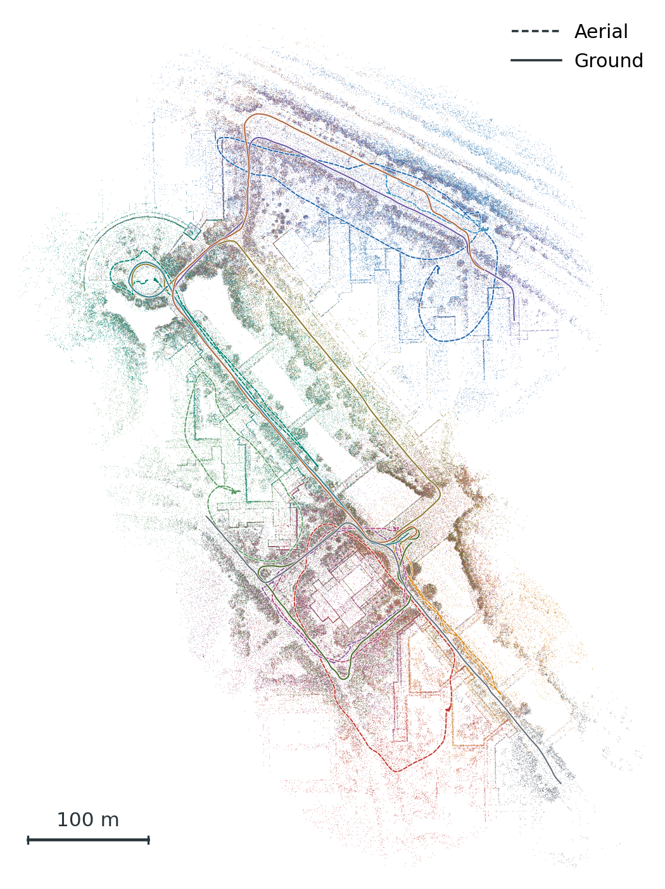

Paper PDF · 600 dpi PNG · Figure notes · Experiment report
One-column layout, 3.5 × 4.67 inches. All 14 corrected trajectories share the exported map frame and match their robot's map color. Dashed lines denote aerial trajectories; solid lines denote ground trajectories.
